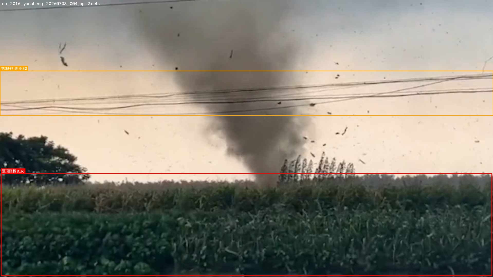
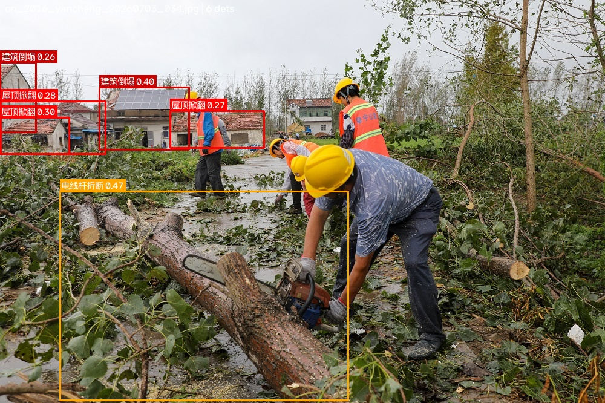
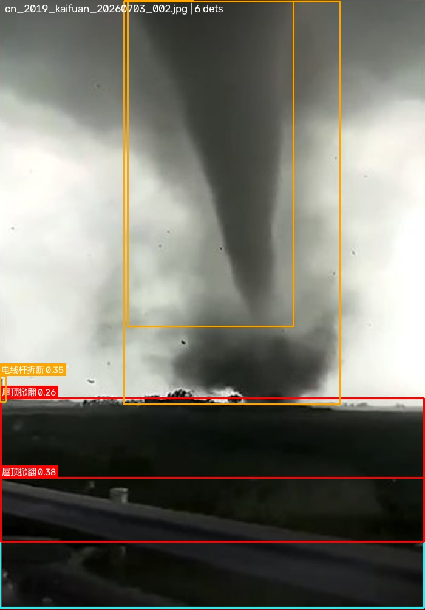
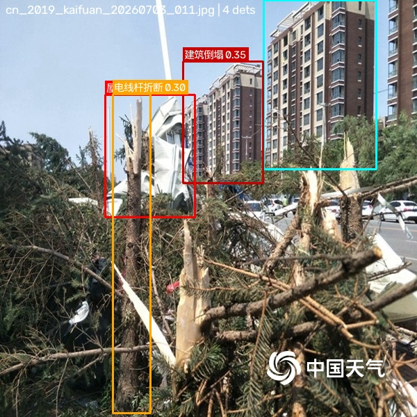
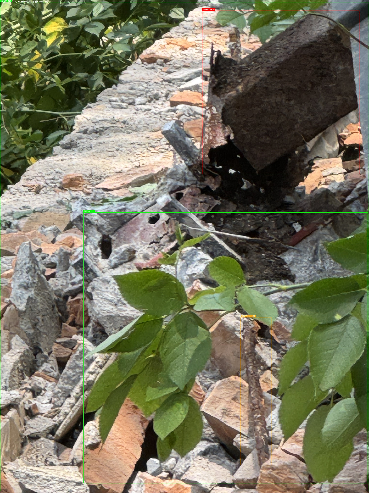
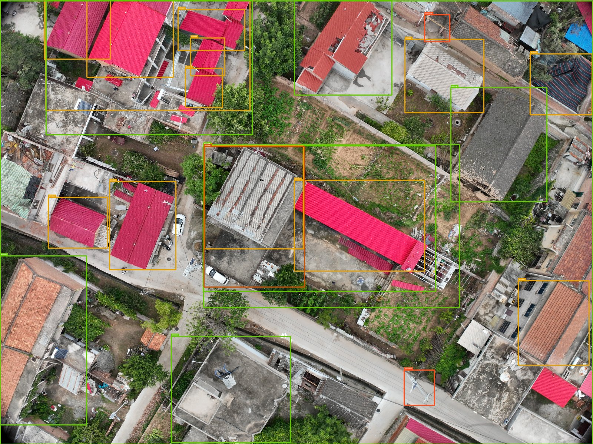
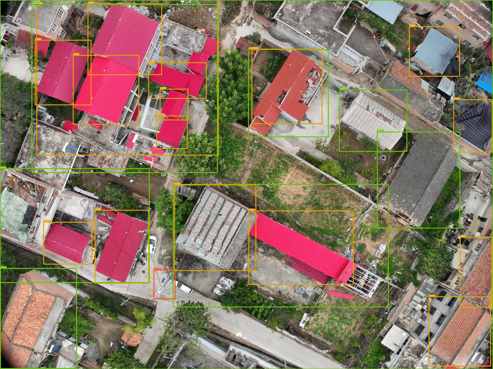
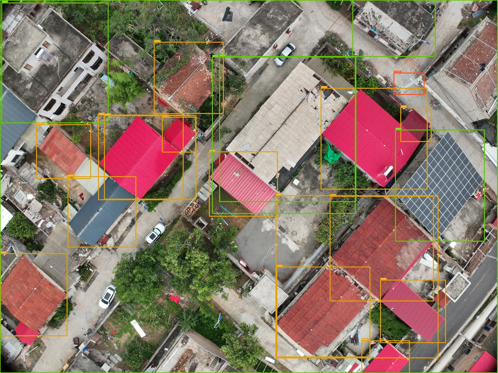
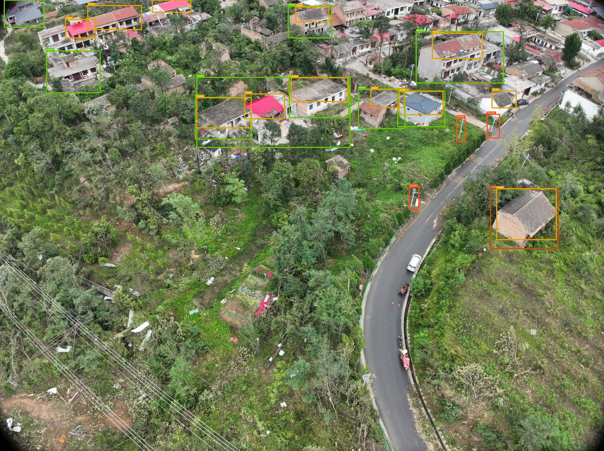

Detection Gallery
AI 检测样例
Grounding DINO 零样本检测结果可视化。← 拖动浏览 →

盐城 2016 · EF4建筑损毁 + 电线杆折断

盐城 2016 · EF4密集街区大面积损毁

开原 2019 · EF3灾后街景多目标检测

开原 2019 · EF3建筑倒塌 + 屋顶掀翻

2026-06-23倒塌电线杆 + 折断树木

2026-06-23 · V2优化检测结果

2026-06-30多类别灾损联合检测

2026-06-30 · V2优化检测结果

渭南航拍24 个灾损目标自动检测

渭南航拍25 个检测框 · 屋顶/建筑/电线杆

渭南航拍22 个检测框 · 飞行路径连续检测

渭南航拍25 个检测框 · 航测末端区域
⟵ 拖动浏览 或点箭头导航 ⟶